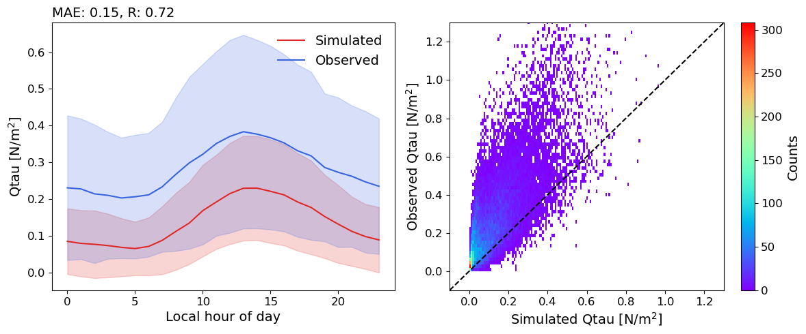

Urban-Plumber2: UK-Kin site CLMU5 simulation
[1]:
from pyclmuapp import usp_clmu
import matplotlib.pyplot as plt
import xarray as xr
import numpy as np
[2]:
%%time
# initialize
usp = usp_clmu()
# here we use the default surface data, which is the london uk-kin data
# lat = 51.5116, lon = -0.1167
# this forcing derived from urban-plumber forcing data
usp_london = usp.run(
case_name = "UK_Kin_default",
SURF="surfdata.nc",
FORCING="forcing.nc",
RUN_STARTDATE = "2002-01-01",
STOP_OPTION = "nyears",
STOP_N = "12",
)
usp_london
Copying the file forcing.nc to the /Users/user/Documents/GitHub/pyclmuapp/docs/notebooks/val/workdir/inputfolder/usp
---------------------------------------------------------------------------
KeyboardInterrupt Traceback (most recent call last)
File <timed exec>:8
File ~/miniconda3/envs/pymet/lib/python3.11/site-packages/pyclmuapp/usp.py:539, in usp_clmu.run(self, output_prefix, case_name, RUN_STARTDATE, START_TOD, STOP_OPTION, STOP_N, ATM_DOM, SURF, FORCING, RUN_TYPE, RUN_REFCASE, RUN_REFDATE, RUN_REFTOD, password, iflog, logfile, hist_type, hist_nhtfrq, hist_mfilt, urban_hac, crun_type)
536 if logfile is None:
537 logfile = os.path.join(self.pwd, 'pyclmuapprun.log')
--> 539 self.docker(cmd=crun_type, iflog=iflog,
540 password=password, cmdlogfile=logfile,
541 dockersript=command)
543 savename_list = []
544 i=0
File ~/miniconda3/envs/pymet/lib/python3.11/site-packages/pyclmuapp/container.py:182, in clumapp.docker(self, cmd, iflog, password, cmdlogfile, dockersript)
171 command = command.format(
172 image_name=self.image_name,
173 container_name=self.container_name,
(...)
178 command=dockersript
179 )
181 #print(f"Running the docker command: '{command}'")
--> 182 run_command(command=command,
183 password=password,
184 logname=cmdlogfile,
185 iflog=iflog
186 )
187 else:
188 print(f"Command '{cmd}' is not supported.")
File ~/miniconda3/envs/pymet/lib/python3.11/site-packages/pyclmuapp/clmu.py:336, in run_command(command, password, logname, iflog)
333 try:
334 if password == "None":
--> 336 result = subprocess.run(command, text=True, check=True, shell=True, stdout=subprocess.PIPE, stderr=subprocess.PIPE)
337 else:
338 result = subprocess.run(command, input=password, text=True, check=True, shell=True, stdout=subprocess.PIPE, stderr=subprocess.PIPE)
File ~/miniconda3/envs/pymet/lib/python3.11/subprocess.py:550, in run(input, capture_output, timeout, check, *popenargs, **kwargs)
548 with Popen(*popenargs, **kwargs) as process:
549 try:
--> 550 stdout, stderr = process.communicate(input, timeout=timeout)
551 except TimeoutExpired as exc:
552 process.kill()
File ~/miniconda3/envs/pymet/lib/python3.11/subprocess.py:1209, in Popen.communicate(self, input, timeout)
1206 endtime = None
1208 try:
-> 1209 stdout, stderr = self._communicate(input, endtime, timeout)
1210 except KeyboardInterrupt:
1211 # https://bugs.python.org/issue25942
1212 # See the detailed comment in .wait().
1213 if timeout is not None:
File ~/miniconda3/envs/pymet/lib/python3.11/subprocess.py:2113, in Popen._communicate(self, input, endtime, orig_timeout)
2106 self._check_timeout(endtime, orig_timeout,
2107 stdout, stderr,
2108 skip_check_and_raise=True)
2109 raise RuntimeError( # Impossible :)
2110 '_check_timeout(..., skip_check_and_raise=True) '
2111 'failed to raise TimeoutExpired.')
-> 2113 ready = selector.select(timeout)
2114 self._check_timeout(endtime, orig_timeout, stdout, stderr)
2116 # XXX Rewrite these to use non-blocking I/O on the file
2117 # objects; they are no longer using C stdio!
File ~/miniconda3/envs/pymet/lib/python3.11/selectors.py:415, in _PollLikeSelector.select(self, timeout)
413 ready = []
414 try:
--> 415 fd_event_list = self._selector.poll(timeout)
416 except InterruptedError:
417 return ready
KeyboardInterrupt:
[3]:
london_nc = usp.nc_view(usp_london[0]).sel(time=slice('2012-01-01', '2014-12-31'))
london_nc
[3]:
<xarray.Dataset> Size: 25MB
Dimensions: (levgrnd: 25, levlak: 10, levdcmp: 1, time: 35089,
hist_interval: 2, lndgrid: 1, column: 6, gridcell: 1,
landunit: 2, pft: 6, levsoi: 20)
Coordinates:
* levgrnd (levgrnd) float32 100B 0.01 0.04 0.09 ... 28.87 42.0
* levlak (levlak) float32 40B 0.05 0.6 2.1 ... 25.6 34.33 44.78
* levdcmp (levdcmp) float32 4B 1.0
* time (time) datetime64[ns] 281kB 2012-01-01 ... 2014-01-01
Dimensions without coordinates: hist_interval, lndgrid, column, gridcell,
landunit, pft, levsoi
Data variables: (12/129)
mcdate (time) int32 140kB ...
mcsec (time) int32 140kB ...
mdcur (time) int32 140kB ...
mscur (time) int32 140kB ...
nstep (time) int32 140kB ...
time_bounds (time, hist_interval) datetime64[ns] 561kB ...
... ...
URBAN_AC (time, gridcell) float32 140kB ...
URBAN_HEAT (time, gridcell) float32 140kB ...
WASTEHEAT (time, gridcell) float32 140kB ...
WBT (time, gridcell) float32 140kB ...
Wind (time, gridcell) float32 140kB ...
ZWT (time, gridcell) float32 140kB ...
Attributes: (12/38)
title: CLM History file information
comment: NOTE: None of the variables ar...
Conventions: CF-1.0
history: created on 11/25/24 19:52:34
source: Community Land Model CLM4.0
hostname: clmu-app
... ...
ctype_urban_shadewall: 73
ctype_urban_impervious_road: 74
ctype_urban_pervious_road: 75
cft_c3_crop: 1
cft_c3_irrigated: 2
time_period_freq: minute_30import the observation data for comparison
[4]:
ds = xr.open_dataset('/Users/user/Documents/GitHub/pyclmuapp/inputfolder/Urban-PLUMBER/datm_files/UK-Kin/CLM1PT_data/UK-KingsCollege_clean_observations_v1.nc')
ds
[4]:
<xarray.Dataset> Size: 2MB
Dimensions: (time: 30577)
Coordinates:
* time (time) datetime64[ns] 245kB 2012-04-04 ... 2014-01-01
Data variables: (12/28)
SWdown (time) float32 122kB ...
LWdown (time) float32 122kB ...
Tair (time) float32 122kB ...
Qair (time) float32 122kB ...
PSurf (time) float32 122kB ...
Rainf (time) float32 122kB ...
... ...
Wind_E_qc (time) int8 31kB ...
SWup_qc (time) int8 31kB ...
LWup_qc (time) int8 31kB ...
Qle_qc (time) int8 31kB ...
Qh_qc (time) int8 31kB ...
Qtau_qc (time) int8 31kB ...
Attributes: (12/24)
title: Flux tower observations from UK-KingsCollege ...
summary: Quality controlled flux tower observations fo...
sitename: UK-KingsCollege
long_sitename: Kings College, London, United Kingdom
version: v1
keywords: urban, flux tower, eddy covariance, observations
... ...
observations_contact: Simone Kotthaus (kotthaus@ipsl.polytechnique....
observations_reference: Bjorkegren et al. (2015): https://doi.org/10....
date_created: 2022-09-22 16:27:09
source: https://github.com/matlipson/urban-plumber_pi...
comment: Observations from KSSW tower
history: v0.9 (2021-09-08): beta issue; v1 (2022-09-15...[5]:
#round the time to the nearest minute
london_nc['time'] = london_nc['time'].dt.round('min')
# shift the time by 30 minutes to match the observations
london_nc['time'] = london_nc['time'] - np.timedelta64(1800, 's')
df = london_nc[['Qle','Qh','Qtau','SWup','LWup']].to_dataframe()
df_ds = ds[['Qle','Qh','Qtau','SWup','LWup']].to_dataframe()
df['Qtau'] = -df['Qtau']
df = df.merge(df_ds, on='time', suffixes=('_usp', '_obs'))
df.head(1)
[5]:
| Qle_usp | Qh_usp | Qtau_usp | SWup_usp | LWup_usp | Qle_obs | Qh_obs | Qtau_obs | SWup_obs | LWup_obs | |
|---|---|---|---|---|---|---|---|---|---|---|
| time | ||||||||||
| 2012-04-04 | 31.69558 | 16.175985 | 0.030384 | 0.0 | 353.656372 | NaN | NaN | NaN | NaN | NaN |
[6]:
%%time
# modify the surface
# tree_area_fraction=0.03
# grass_area_fraction=0.04
# bare_soil_area_fraction=0.0
# water_area_fraction=0.14
# impervious_area_fraction=0.79
# roof fraction = 0.4
# raod fraction = 0.39
# topsoil_clay_fraction=0.26
# topsoil_sand_fraction=0.45
# PCT_CLAY = 0.26
# PCT_SAND = 0.45
action = {
#"ALB_ROOF_DIR": 0.109,
#"ALB_ROOF_DIF": 0.109,
"CANYON_HWR": 1.13,
"HT_ROOF": 21.3,
"WTLUNIT_ROOF": 0.4/(0.03+0.04+0.79),
"WTROAD_PERV": 1 - 0.39/(0.03+0.04+0.39),
#"ALB_IMPROAD_DIR": 0.109,
#"ALB_IMPROAD_DIF": 0.109,
#"ALB_PERROAD_DIR": 0.109,
#"ALB_PERROAD_DIF": 0.109,
#"WIND_HGT_CANYON": 50
}
usp.modify_surf(action=action, surfata_name="surface_modfied_UK_Kin.nc", mode="replace", urban_type=2)
CPU times: user 187 ms, sys: 53.7 ms, total: 241 ms
Wall time: 258 ms
[7]:
usp_london_detail = usp.run(
case_name = "UK_Kin_detail",
RUN_STARTDATE = "2002-01-01",
STOP_OPTION = "nyears",
STOP_N = "12",
RUN_TYPE= "coldstart",
)
usp_london_detail
[7]:
['/Users/user/Documents/GitHub/pyclmuapp/docs/notebooks/val/workdir/outputfolder/lnd/hist/UK_Kin_detail_clm0_2024-11-25_20-09-43_clm.nc']
[8]:
ludon_detail_nc = usp.nc_view(usp_london_detail[0]).sel(time=slice('2012-01-01', '2014-12-31'))
ludon_detail_nc['time'] = ludon_detail_nc['time'].dt.round('min')
ludon_detail_nc['time'] = ludon_detail_nc['time'] - np.timedelta64(1800, 's')
df_ds = ds[['Qle','Qh','Qtau','SWup','LWup']].to_dataframe()
df_detail = ludon_detail_nc[['Qle','Qh','Qtau','SWup','LWup']].to_dataframe()
df_detail['Qtau'] = -df_detail['Qtau']
df_detail = df_detail.merge(df_ds, on='time', suffixes=('_usp', '_obs'))
df_detail.head(1)
[8]:
| Qle_usp | Qh_usp | Qtau_usp | SWup_usp | LWup_usp | Qle_obs | Qh_obs | Qtau_obs | SWup_obs | LWup_obs | |
|---|---|---|---|---|---|---|---|---|---|---|
| time | ||||||||||
| 2012-04-04 | 35.300236 | 16.307856 | 0.029534 | 0.0 | 352.476349 | NaN | NaN | NaN | NaN | NaN |
[9]:
from sklearn.metrics import mean_squared_error, mean_absolute_error
import seaborn as sns
import warnings
from datetime import datetime
from scipy.stats import pearsonr
warnings.filterwarnings('ignore')
def plotting(df, save_path):
var_list = ['SWup','LWup','Qle','Qh','Qtau']
unit = ['W/m$\mathrm{^{2}}$', 'W/m$\mathrm{^{2}}$', 'W/m$\mathrm{^{2}}$', 'W/m$\mathrm{^{2}}$', 'N/m$\mathrm{^{2}}$']
lim = [[-10, 130], [280, 600], [-120, 350], [-150, 500], [-0.1, 1.3]]
for var in var_list:
fig = plt.figure(figsize=(12, 5))
df_plot = df[[f'{var}_usp', f'{var}_obs']].dropna()
df_mean = df_plot[[f'{var}_usp', f'{var}_obs']].groupby(df_plot.index.hour).mean()
df_std = df_plot[[f'{var}_usp', f'{var}_obs']].groupby(df_plot.index.hour).std()
mae = mean_absolute_error(df_plot[f'{var}_obs'],df_plot[f'{var}_usp'])
#mean_absolute_percentage_error(df_plot[f'{var}_usp'], df_plot[f'{var}_obs'])#mean_squared_error(df_plot[f'{var}_usp'], df_plot[f'{var}_obs'])
R, _ = pearsonr(df_plot[f'{var}_usp'], df_plot[f'{var}_obs'])
ax = fig.add_subplot(1, 2, 1)
if var == 'SWup':
for h in range(0,24):
if h not in df_mean.index:
df_mean.loc[h] = [0,0]
df_std.loc[h] = [0,0]
df_mean = df_mean.sort_index()
df_std = df_std.sort_index()
ax.plot(df_mean.index, df_mean[f'{var}_usp'], color="#E02927", label='Simulated')
ax.fill_between(df_mean.index, df_mean[f'{var}_usp']-df_std[f'{var}_usp'], df_mean[f'{var}_usp']+df_std[f'{var}_usp'], color="#E02927", alpha=0.2)
ax.plot(df_mean.index, df_mean[f'{var}_obs'], color="#3964DF", label='Observed')
ax.fill_between(df_mean.index, df_mean[f'{var}_obs']-df_std[f'{var}_obs'], df_mean[f'{var}_obs']+df_std[f'{var}_obs'], color="#3964DF", alpha=0.2)
ax.set_ylabel(f'{var} [{unit[var_list.index(var)]}]', fontsize=14)
ax.set_xlabel('Local hour of day', fontsize=14)
ax.set_title(f'MAE: {mae:.2f}, R: {R:.2f}', fontsize=14, loc='left')
ax.tick_params(axis='both', which='major', labelsize=12)
ax.legend(frameon=False, fontsize=14)
ax = fig.add_subplot(1, 2, 2)
h = sns.histplot(
x=f'{var}_usp',
y=f'{var}_obs',
data=df_plot,
ax=ax,
cmap='rainbow',
bins=120,
#cbar=True,
#cbar_kws={'label': 'Counts'},
)
cbar = h.figure.colorbar(h.collections[0], ax=ax)
cbar.set_label('Counts', fontsize=14)
cbar.ax.tick_params(labelsize=12)
ax.plot(lim[var_list.index(var)], lim[var_list.index(var)], color='black', linestyle='--')
ax.tick_params(axis='both', which='major', labelsize=12)
ax.set_xlabel(f'Simulated {var} [{unit[var_list.index(var)]}]', fontsize=14)
ax.set_ylabel(f'Observed {var} [{unit[var_list.index(var)]}]', fontsize=14)
ax.set_xlim(lim[var_list.index(var)])
ax.set_ylim(lim[var_list.index(var)])
print(f'{var} MAE: {mae:.2f}')
fig.tight_layout()
fig.savefig(save_path + f'_{var}.pdf', dpi=300, bbox_inches='tight')
plt.show()
[10]:
plotting(df, 'figs/CLMU5_UK-Kin_default')
plotting(df_detail, 'figs/CLMU5_UK-Kin_detail')
SWup MAE: 4.69

LWup MAE: 5.50

Qle MAE: 23.39
Qh MAE: 52.93

Qtau MAE: 0.16

SWup MAE: 7.48

LWup MAE: 7.79

Qle MAE: 18.42

Qh MAE: 50.15

Qtau MAE: 0.15
